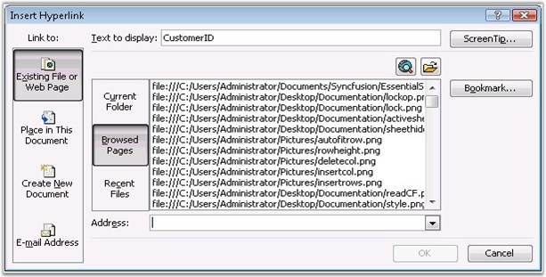
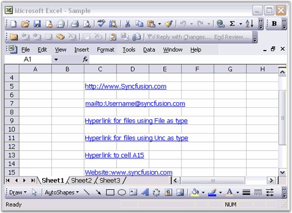

A hyperlink is a convenient way to allow the user of a workbook to instantly access another place in the workbook, or another workbook, or a file associated with another application. A hyperlink can be inserted in a cell or a shape in Excel. Select the cell or shape, and select Hyperlink from the Insert menu, or right-click anywhere in the cell or shape, and then select Hyperlink from the pop-up menu. You can enter a cell reference in the current workbook, browse to another workbook, a different file, or a web page, and even enter an email address and subject line. You can also edit the text for a hyperlink in a cell.
Following is the Insert Hyperlink dialog box of MS Excel that allows to set various hyperlinks.

Figure 82: Inserting Hyperlink
XlsIO provides support to set the following types of hyperlinks with the Type and Address properties of the IHyperlink interface.
· Hyperlink to a Worksheet Range
· Hyperlink to Website
· Hyperlink to e-mail
· Hyperlink to external files
You can also set the text to be displayed in a hyperlink, and a tooltip that shows the purpose of the link, by using the TextToDisplay and ScreenTip properties.
Following code example illustrates how to insert various hyperlinks.
|
[C#]
// Creating a Hyperlink for a Website. IHyperLink hyperlink = sheet.HyperLinks.Add(sheet.Range["C5"]); hyperlink.Type = ExcelHyperLinkType.Url; hyperlink.Address = "http://www.syncfusion.com"; hyperlink.ScreenTip = "To know more About SYNCFUSION PRODUCTS go through this link";
// Creating a Hyperlink for e-mail. IHyperLink hyperlink1 = sheet.HyperLinks.Add(sheet.Range["C7"]); hyperlink1.Type = ExcelHyperLinkType.Url; hyperlink1.Address = "mailto:Username@syncfusion.com"; hyperlink1.ScreenTip = "Send Mail";
// Creating a Hyperlink for Opening Files using type as File. IHyperLink hyperlink2 = sheet.HyperLinks.Add(sheet.Range["C9"]); hyperlink2.Type = ExcelHyperLinkType.File; hyperlink2.Address = @"C:\Program files"; hyperlink2.ScreenTip = "File path"; hyperlink2.TextToDisplay = "Hyperlink for files using File as type";
// Creating a Hyperlink for Opening Files using type as Unc. IHyperLink hyperlink3 = sheet.HyperLinks.Add(sheet.Range["C11"]); hyperlink3.Type = ExcelHyperLinkType.Unc; hyperlink3.Address = @"C:\Documents and Settings"; hyperlink3.ScreenTip = "Click here for files"; hyperlink3.TextToDisplay = "Hyperlink for files using Unc as type";
// Creating a Hyperlink to another cell using type as Workbook. IHyperLink hyperlink4 = sheet.HyperLinks.Add(sheet.Range["C13"]); hyperlink4.Type = ExcelHyperLinkType.Workbook; hyperlink4.Address = "Sheet1!A15"; hyperlink4.ScreenTip = "Click here"; hyperlink4.TextToDisplay = "Hyperlink to cell A15"; |
|
[VB.NET]
' Creating a Hyperlink for a Website. Dim hyperlink As IHyperLink = sheet.HyperLinks.Add(sheet.Range("C5")) hyperlink.Type = ExcelHyperLinkType.Url hyperlink.Address = "http://www.Syncfusion.com" hyperlink.ScreenTip = "To know more About SYNCFUSION PRODUCTS go through this link"
' Creating a Hyperlink for e-mail. Dim hyperlink1 As IHyperLink = sheet.HyperLinks.Add(sheet.Range("C7")) hyperlink1.Type = ExcelHyperLinkType.Url hyperlink1.Address = "mailto:Username@syncfusion.com" hyperlink1.ScreenTip = "Send Mail"
' Creating a Hyperlink for Opening Files using type as File. Dim hyperlink2 As IHyperLink = sheet.HyperLinks.Add(sheet.Range("C9")) hyperlink2.Type = ExcelHyperLinkType.File hyperlink2.Address = "C:\Program files" hyperlink2.ScreenTip = "File path" hyperlink2.TextToDisplay = "Hyperlink for files using File as type"
' Creating a Hyperlink for Opening Files using type as Unc. Dim hyperlink3 As IHyperLink = sheet.HyperLinks.Add(sheet.Range("C11")) hyperlink3.Type = ExcelHyperLinkType.Unc hyperlink3.Address = "C:\Documents and Settings" hyperlink3.ScreenTip = "Click here for files" hyperlink3.TextToDisplay = "Hyperlink for files using Unc as type"
' Creating a Hyperlink to another cell using type as Workbook. Dim hyperlink4 As IHyperLink = sheet.HyperLinks.Add(sheet.Range("C13")) hyperlink4.Type = ExcelHyperLinkType.Workbook hyperlink4.Address = "Sheet1!A15" hyperlink4.ScreenTip = "Click here" hyperlink4.TextToDisplay = "Hyperlink to cell A15" |

Figure 83: XlsIO with Hyperlinks